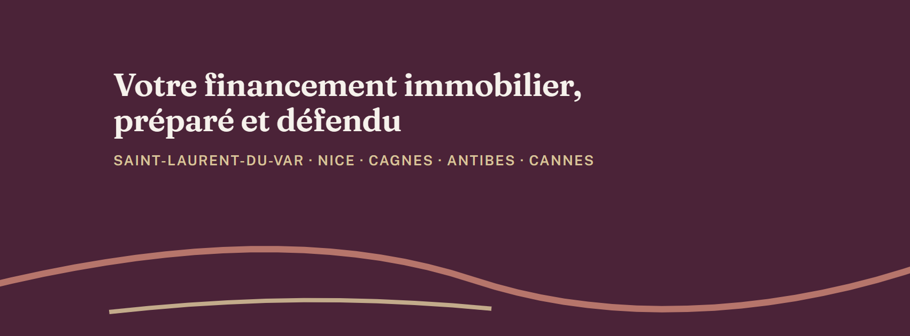

Sur téléphone : appui long sur l'image, puis « Enregistrer l'image » (ou le bouton Télécharger). Ces visuels sont destinés à être publics ; ils ne contiennent aucune photo personnelle.
Instagram : photo de profilModifier le profil → Modifier la photo. Fichier 1080 × 1080, affiché en cercle.TéléchargerPage Facebook : photo de profilSur la Page Bartali Courtage : photo de profil → Importer. Fichier 720 × 720.Télécharger

Page Facebook : photo de couvertureSur la Page : Modifier la couverture → Importer. Garder le cadrage proposé, sans zoomer : le texte est placé dans la zone visible sur téléphone.Télécharger
Fichiers générés depuis le projet Bartali Courtage (monogramme et palette du site).